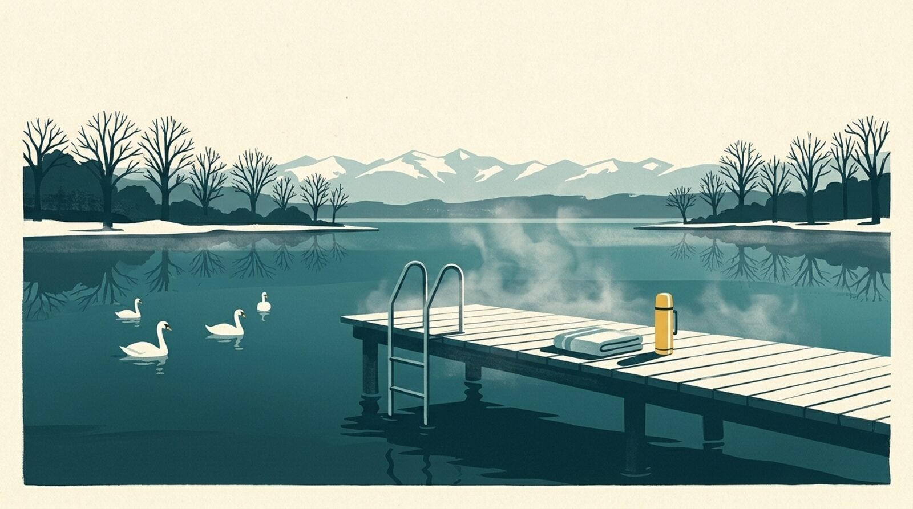

In short
For a winter swim in Lake Zurich, the Swiss Lifesaving Society gives a simple rule: no more minutes in the water than it has degrees. My Lake shows today’s water in front of each beach on the lake and on nearby Greifensee, and lists 4 saunas on Lake Zurich.

How long should you stay in?
The Swiss Lifesaving Society gives a simple rule for cold water: do not stay in for more minutes than the water has degrees. The current water temperature is shown below. Read first: the first 90 seconds in cold water and how to warm up afterwards.
Where to swim?
Here are the Lake Zurich and Greifensee beaches followed by My Lake, each with its page (water, wind, verdict). Before you go, check that access is open: many of the lake’s baths are staffed facilities whose hours change in winter, and we do not have that information beach by beach.
Lake Zurich
- Zurich – Strandbad Mythenquai
- Zurich – Seebad Enge
- Zurich – Strandbad Wollishofen
- Zurich – Seebad Utoquai
- Zurich – Strandbad Tiefenbrunnen
- Kilchberg
- Rüschlikon
- Thalwil
- Zollikon
- Küsnacht
- Erlenbach
- Oberrieden
- Feldmeilen
- Meilen
- Wädenswil – Rietliau
- Uetikon am See
- Richterswil
- Bäch
- Pfäffikon SZ
- Rapperswil
Lake Greifen
Warming up: the lakeside saunas
Lake Zurich
- Saunabooten Hildi & Alice (Bootsvermietung Enge), Zurich, near Zurich – Strandbad Mythenquai: Two sauna boats at Mythenquai, rented in fixed 4-hour slots for 2 to 6 people, no licence needed (speed limited to 10 km/h), booked online. Prices vary by source: see the website.
- Saunaboot Leopoldd, Jona (Rapperswil-Jona), near Rapperswil: Sauna boat leaving from the KIBAG marina in Jona, up to six people, 3, 4, 6 or 9-hour slots from CHF 399, no licence needed, minimum age 18.
- Sauna am See Tonttu, Seebad Enge, Zurich (September to May), near Zurich – Seebad Enge: In the historic Enge baths: two mixed saunas and one women’s cabin, a large open-air area with direct lake access, a café, no booking needed. Season mid-September to early May according to badi-info.ch.
- Seesauna Stäfa, Stäfa (October to April), near Uetikon am See: Seestrasse 2: Finnish sauna, organic sauna on Tuesdays, indoor sauna cube, direct lake access and a heated lounge; CHF 30 entry, no booking, mid-October to April according to third-party sources.
Entries checked on 11 November 2026. Opening hours, prices and seasons change: each sauna’s link goes to its own website, worth checking before you set off.
Lake Zurich and Greifensee water right now
Each beach’s water temperature is in the My Lake app, updated every three hours.
Disclaimer. This article gives general information taken from the sources cited; it is not medical advice. Cold-water swimming puts real strain on the heart and can be dangerous: talk to a doctor before you start, especially with a heart condition, high blood pressure or during pregnancy. Never swim alone and follow lifeguards’ instructions. You swim at your own risk; in an emergency, call 144 in Switzerland or 112.